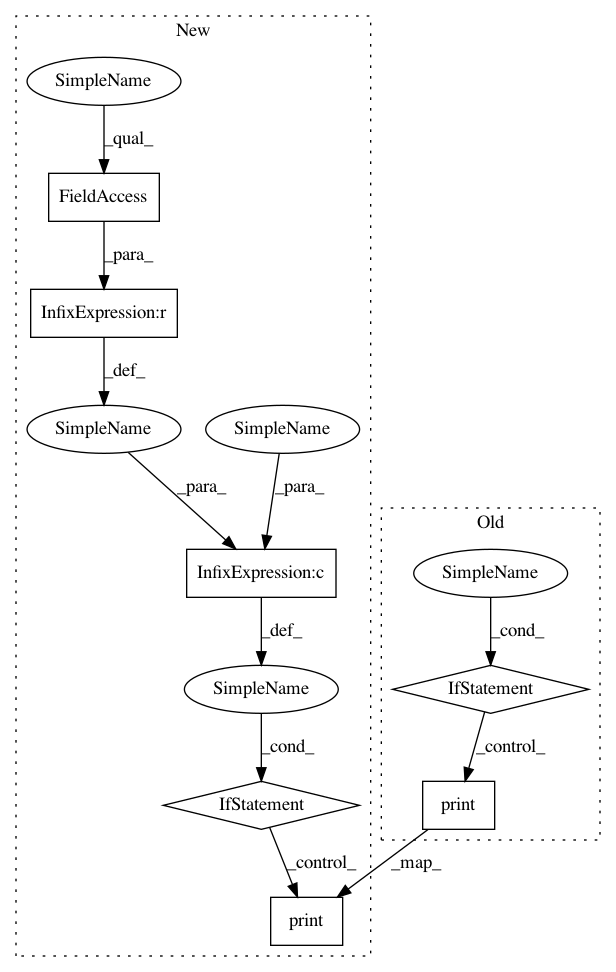

fc142fccc56395575f41b459a66b629bdd79a559,set_expansion_demo/ui/main.py,,row_selected_callback,#,128
Before Change
def row_selected_callback(attr, old, new):
global clear_flag
if not clear_flag:
print("row selected callback")
print("old indices=" + str(old.indices))
print("new indices=" + str(new.indices))
global all_selected_phrases
// selected_rows = new.indices
// values = ""
// for x in selected_rows:
// values += (expand_table_source.data["res"][x] + ", ")
// values = values[:-2]
//sync phrases lists:
old_phrases = [expand_table_source.data["res"][p] for p in old.indices]
new_phrases = [expand_table_source.data["res"][p] for p in new.indices]
print("selected_expand was updated: old=" + str(
old_phrases) + " ,new=" + str(new_phrases))
After Change
def row_selected_callback(attr, old, new):
global clear_flag
if not clear_flag and expand_table_source.data != empty_table:
print("row selected callback")
print("old indices=" + str(old.indices))
print("new indices=" + str(new.indices))
global all_selected_phrases
//sync phrases lists:
old_phrases = [expand_table_source.data["res"][p] for p in old.indices]
new_phrases = [expand_table_source.data["res"][p] for p in new.indices]
print("selected_expand was updated: old=" + str(
old_phrases) + " ,new=" + str(new_phrases))
//phrase was de-selected from expand list:
for o in old_phrases:
if o not in new_phrases and (all_phrases is not None and all_phrases_dict[o] in phrases_list.value):
print("removing " + o + "from vocab selected")
phrases_list.value.remove(all_phrases_dict[o])
break
//new phrase was selected from expand list:
for n in new_phrases:
if n not in old_phrases and (all_phrases is not None and all_phrases_dict[n] in phrases_list.options and all_phrases_dict[n] not in phrases_list.value):
phrases_list.value.append(all_phrases_dict[n])
break
update_all_selected_phrases()
seed_input_box.value = get_selected_phrases_for_seed()
def update_all_selected_phrases():
print("update selected phrases")
global all_selected_phrases
updated_selected_phrases = all_selected_phrases[:]
In pattern: SUPERPATTERN
Frequency: 3
Non-data size: 7
Instances
Project Name: NervanaSystems/nlp-architect
Commit Name: fc142fccc56395575f41b459a66b629bdd79a559
Time: 2018-06-07
Author: shira.guskin@intel.com
File Name: set_expansion_demo/ui/main.py
Class Name:
Method Name: row_selected_callback